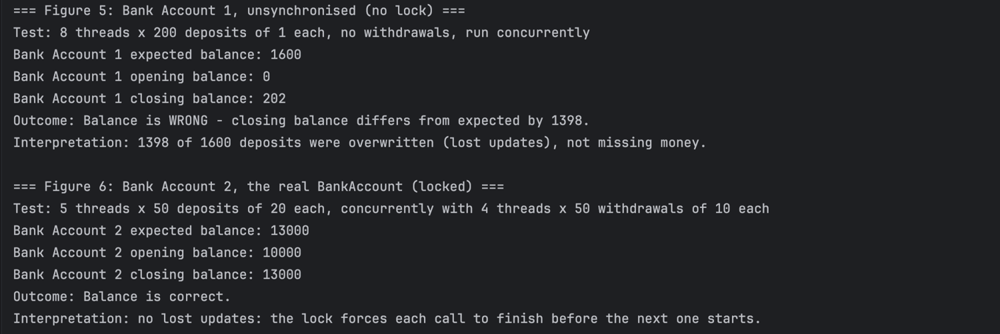
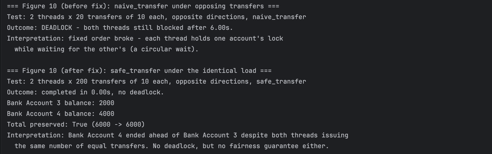
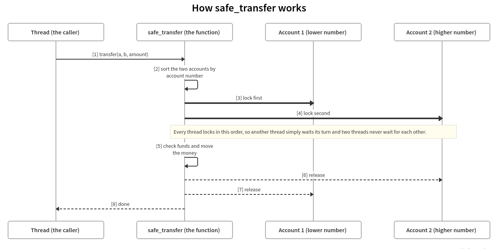
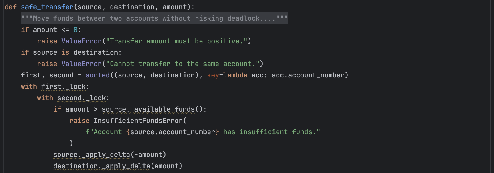
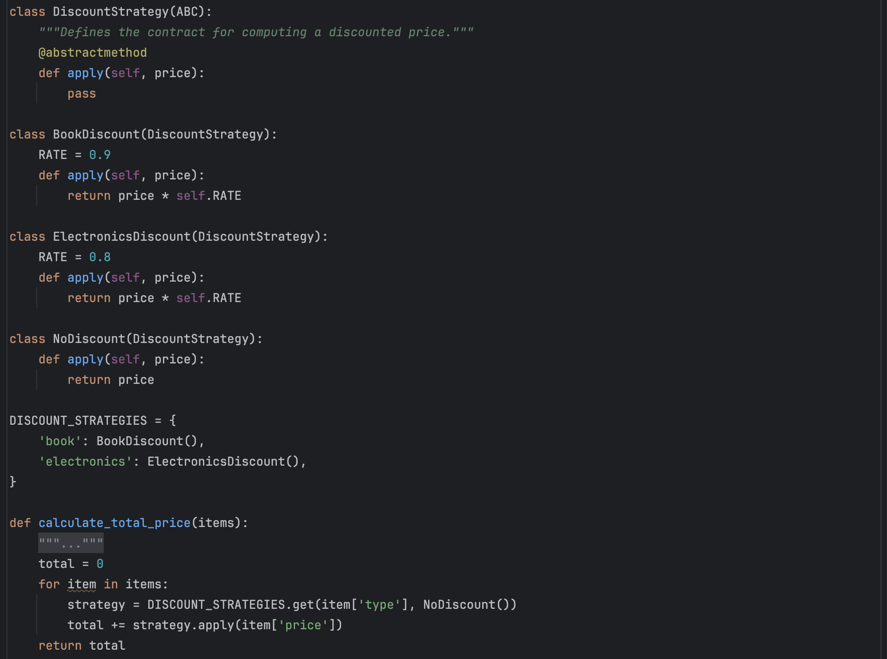
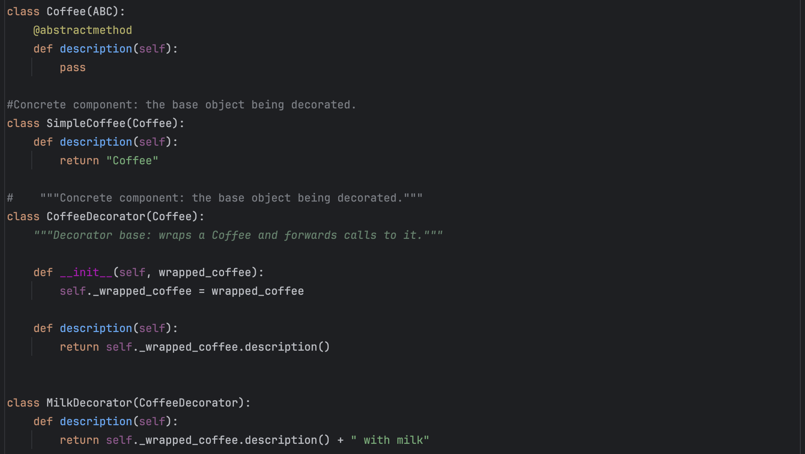
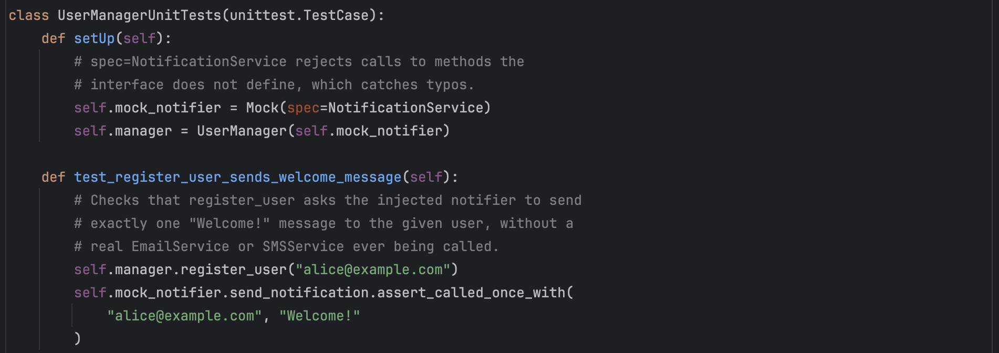
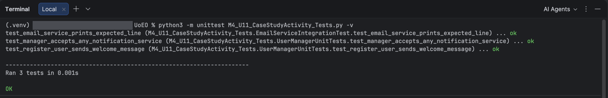
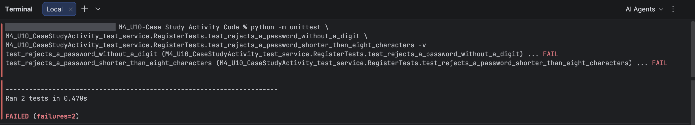
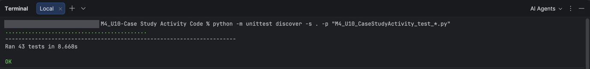

Design patterns, software architecture, concurrency, and secure coding practices for building scalable, maintainable systems.
Module 4, Advanced Object-Oriented Design and Programming, builds on foundational OOP principles to cover design patterns, software architecture, concurrency, secure coding practices, and clean code techniques, considering critical themes such as Equality, Diversity and Inclusion (EDI), sustainability, and entrepreneurship. The module combines weekly practical exercises, case studies, and a capstone project with collaborative seminars and discussion forums.
Module learning outcomes:
This task summarises how I met each learning outcome. Every claim points to a file I wrote, a report I submitted, or a forum post I made. Table 1 lists the evidence, and the paragraphs explain what it shows.
Table 1: Evidence for each learning outcome (file names)
LO1, secure coding. I replaced plain-text passwords and a loose login check with bcrypt hashing, a duplicate-username check and a timed lockout. A peer found the duplicate-username flaw and I fixed it. In Unit 10 I built a tested User Management service with password rules, a small exception hierarchy and audit logging that never records passwords. The main lesson was that secure code needs other reviewers, because I had tested only the cases I expected.
LO2, advanced object-oriented principles. In Unit 2 a payment class ignored a new payment method without raising any error. Abstraction and the Strategy pattern let me add methods without editing existing classes. In Unit 6 I used encapsulation, one lock per account and a Command-based audit log to build a thread-safe banking system. In Unit 11 I removed tight coupling with constructor injection.
LO3, design patterns. I used Strategy for discount and payment rules, Decorator for the coffee-shop exercise, Factory Method for the car exercise, Adapter for core-banking integration and Command for the audit log.
LO4, architectures for large systems. In Units 9 and 10 I compared layered and microservice styles and wrote down the cost of each. The ShopEase design uses three layers, injected strategies and one authentication filter, which I identified as a single point of failure. The e-learning design uses five services behind an API gateway and an event bus and accepts extra trust boundaries in return for independent scaling.
LO5, solutions adaptable for AI. This is my weakest outcome. None of my code contains an AI component, so I do not claim to have built one. What I can show is the design basis such a component would need: an interface, constructor injection and mocks, so that a model client could be swapped or replaced in tests. I record the remaining gap as an action in Task 4.
I linked each pattern to three qualities. Strategy gives runtime flexibility, because the rule is chosen while the program runs (Marcotte and Zebdi, 2022). Decorator supports separation of concerns, because each wrapper adds one responsibility (Sarcar, 2022). Both support scalability and extensibility, because a new rule is a new class. The costs are more classes to read and, for decorators, harder debugging when too many are stacked (Sarcar, 2022).
I met the Model Registry idea through the Unit 10 reading. Lu et al. (2024, Section 5.1.3) describe a co-versioning registry that tracks which version of an AI component is in a system and which data and parameters produced it, and they name the MLflow Model Registry as an example. I met Feature Store only as a term in the Unit 10 brief, so I treat it as a gap to study.
This task shows the artefacts I built and explains the reasoning behind them. Table 2 lists the artefacts with their file names. Table 3 records the peer and tutor exchanges that shaped them. Table 4 lists selected test cases from my Unit 6, 10 and 11 code, with the type of test, the input, the expected result and the result I observed. Table 5 gives the critical commentary for each artefact. The paragraphs give the pattern choice, the benefit and the cost.
Table 2: Artefact register
The object is a bank account that stays correct when many threads use it (M4_U06_IndividualCodingExercise_BankingSystem.py). Each account keeps its balance private and guards it with its own lock. A Command class wraps every deposit, withdrawal and transfer, so a processor can log each attempt, including failed ones. I chose locks because a shared balance is a classic race condition and I wanted proof, not trust. An unsynchronised control account lost 1,398 of 1,600 deposits, while the locked account stayed exact (Figure 1). The 33 tests include stress cases, and one proves that the naive version really deadlocks.

Figure 1: Console output from M4_U06_IndividualCodingExercise_BankingSystem_ThreadSafetyDemo.py: an unsynchronised account against the locked account.
The main challenge was deadlock. Two transfers in opposite directions can each hold one lock and wait for the other (Figure 2). Nguyen (2022) identifies circular wait as the root cause and removes it by ranking locks into a fixed order. I ranked them by account number, a stable and meaningful identifier, so safe_transfer always locks the lower number first (Figure 3). Testing then found a second deadlock I had not predicted: a transfer from an account to itself. A guard now rejects it. Fixed ordering removes deadlock but does not say which waiting thread runs next, so one account can finish ahead under load, which McDonald (2022) groups with deadlock and livelock as a classic hazard. I also built sequential_transfer, which never holds two locks but needs a refund step when the second half fails. I kept it as a tested alternative, not the live design.

Figure 2: Console output from M4_U06_IndividualCodingExercise_BankingSystem_DeadlockDemo.py: naive_transfer deadlocks and safe_transfer completes.

Figure 3: Lock order in safe_transfer. The lower number is whichever of the two accounts has the lower account number.

Figure 4: Code snippet - safe_transfer locks both accounts in a fixed order
Strategy. In M4_U08_CollaborativeDiscussion4_Refactored.py I replaced an if chain with a DiscountStrategy interface and one class per rule (Figure 5). I chose it because the rule must vary without touching the calculation, and the same idea fixed the payment class in M4_U02_Case_Study_Activity_Enhanced.py. A new item type is a new class and one registry entry, so the loop never changes (Marcotte and Zebdi, 2022). The cost is extra classes for only two rules. A peer argued that constants were enough (Table 3, Unit 8). I kept Strategy because both strategies were already in use, so the abstraction was not speculative. I now use that as my test for pattern choice. In the Unit 5 thread, two peers also noted that my set_strategy method lets a customer change payment method during checkout (Table 3).

Figure 5: Code snippet - Strategy replaces the if chain.
Decorator. M4_U04_Seminar_Prep.py wraps a SimpleCoffee in MilkDecorator and SugarDecorator (Figure 6). Each wrapper has the same interface as the coffee, so a client cannot tell the difference, and each adds one responsibility (Sarcar, 2022). I chose it because inheritance would need a new class for every combination of toppings. The same shape suits logging or security layers around a service, which peers and I discussed for payment validation (Table 3, Unit 5). Marcotte and Zebdi (2022) add that small single-purpose classes are easier to test. The costs are many small objects and a call chain that is harder to debug as it grows (Sarcar, 2022). In the Unit 5 thread, Peer B favoured a decorator for validation, while Peer C kept validation inside each strategy. I concluded that a rule every method shares belongs in the context and a method-specific rule belongs in its strategy (Table 3). My coffee exercise only extends a description, so it shows the structure but not a real security layer.

Figure 6: Code snippet - Decorator wraps a coffee without changing it.
| Unit | Collaborative Discussion | What it taught me | Permalinks |
|---|---|---|---|
| U4 Adapter |
The tutor asked whether adapters add complexity. Peer A noted that my adapter uses composition. I answered that with two channels it removes duplicated translation code. | The value of a pattern depends on how many consumers share it. | Tutor Peer A My reply |
| U5 Strategy and validation |
Peer C and Peer B noted that set_strategy allows a runtime change. Peer B favoured a decorator for validation and Peer C kept it inside each strategy. I replied to Peer A that a shared rule belongs in the context and a method-specific rule in its strategy. | Where a rule belongs depends on how many strategies share it. | Peer C Peer B Peer A's post |
| U7 Secure authentication |
Peer A found that a repeated username overwrote the stored hash. Peer B praised the timed lockout. I tested Peer B's code and found a dead duplicate account, a lockout of the real user and an accepted password equal to the username. | Peer review finds what my own testing missed. | Peer A Peer B My reply My reply to Peer A My reply to Peer B |
| U8 Strategy and constants |
Peer A argued that constants were enough for two discount rules. I kept Strategy because both strategies were already in use. | Abstraction should be justified by present use. | Peer A My reply |
Table 3: Peer and tutor exchanges used as evidence (permalinks).
Mocking. In M4_U11_CaseStudyActivity_Tests.py a Mock built with spec=NotificationService replaces the email channel, so UserManager is tested without sending anything (Figure 7 and 8). Tibi (2022) separates mocks, stubs and fakes as test doubles. M4_U10_CaseStudyActivity_repository.py holds an in-memory repository, which is a fake in that sense. In the Unit 6 tests, patch.object forces a deposit to fail so the refund path can run, and in M4_U10_Seminar_Prep_Demo.py a frozen clock removes a 60-second wait. Each double isolates one class. The cost is that a mock can pass while the real channel fails, so I kept one integration test that uses the real EmailService.

Figure 7: Code snippet - a Mock built from the interface replaces the real channel.

Figure 8: Console output from the Unit 11 case study (Figure 1 of M4_U11_Case_Study_Activity_Report.docx): channel swap and three passing tests. The screenshot shows earlier file names for M4_U11_CaseStudyActivity_Main.py and M4_U11_CaseStudyActivity_Tests.py.
AI-assisted testing. I used an AI assistant to draft the first lockout test in Unit 10 and to generate the Unit 11 test suite. It saved time, but speed is not quality. On review, test_manager_accepts_any_notification_service loops over two channel classes and never uses the loop variable, so it checks the same mock twice and gives a false sense of coverage. Contieri (2023, p. 318) warns against weak tests of this kind. Human checks mattered more than generation: in Unit 10 I removed a rule and watched two tests fail, which proves the tests can fail (Figure 9), then restored it (Figure 10). AI suggested cases, but my judgement decided which tests were meaningful. I did not use AI for regression testing.

Figure 9: Red step (Figure 3 of M4_U10_Case_Study_Activity_Report.docx): two tests fail once the password rule is removed from M4_U10_CaseStudyActivity_service.py.

Figure 10: Green step (Figure 4 of M4_U10_Case_Study_Activity_Report.docx): 43 tests pass after the rule is restored.
| ID | File and test | Type | Input or condition | Expected | Result |
|---|---|---|---|---|---|
| C1 | M4_ |
Positive | sequential_ |
Balances 70 and 80 | Pass |
| C2 | M4_ |
Positive | Valid registration details | User created with a hashed password | Pass |
| C3 | M4_ |
Negative | withdraw(20) from a balance of 10 | InsufficientFundsError | Pass |
| C4 | M4_ |
Negative | Register an existing username | Registration rejected | Pass |
| C5 | M4_ |
Negative | Password identical to the username | Registration rejected | Pass |
| C6 | M4_ |
Stress | 8 deposit threads and 6 withdrawal threads, 200 operations each | Opening balance plus deposits minus withdrawals | Pass |
| C7 | M4_ |
Stress | 2 threads, 300 opposing safe_ |
Total funds unchanged | Pass |
| C8 | M4_ |
Stress | 2 threads, 200 opposing safe_ |
No thread left blocked; total 2000 | Pass |
| C9 | M4_ |
Stress (hazard) | 2 threads, 10 opposing naive_ |
Still blocked after a 2-second timeout (deadlock shown) | Pass (hazard shown) |
| C10 | M4_ |
Exception | safe_ |
ValueError; balance stays 100 | Pass |
| C11 | M4_ |
Exception | Deposit and refund both forced to fail with patch. |
RefundFailedError; 70 left at the source | Pass |
| C12 | M4_ |
Mock | Mock(spec=NotificationService) injected | send_ |
Pass |
| C13 | M4_ |
Stubbed clock | 5 failed logins, then the clock moves on 61 seconds | Account unlocked; correct password accepted | Pass |
| C14 | M4_ |
Negative (red step) | Length and character rule removed on purpose | Both tests fail | Fail as intended (Figure 9), then Pass after restore (Figure 10) |
Table 4: Selected test cases from the Unit 6, 10 and 11 code: type of test, input, expected and observed results.
Four pieces of work act as my case studies and capstone-type work.
These pieces supported scalability because variation lives in small classes, so growth means adding classes, not editing core code. They supported robustness through three kinds of test: unit tests with doubles, concurrency stress tests and a red-first check. For AI-readiness, I did not set it as a design goal, and none of this work contains an AI component. The interfaces and injection would let a model client be added or mocked, but I recognised that after the work, not while designing. I turn this gap into an action in Task 4.
Three trade-offs reappear. For pattern selection, each pattern bought flexibility with extra classes, so I chose one only when a second use already existed. For testing complexity, concurrency tests are not deterministic, so I asserted invariants such as total funds conserved, and a passing run still cannot prove that no race exists. For abstraction against over-engineering, the Unit 11 interface and composition root are justified by two channels, but a single channel would not justify them.
Table below summarises each artefact referred to in section 2.1 (Table 2): what it does, the main challenge I met and how I solved it, and the trade-offs and limits I recorded.
| Artefact | Object and techniques | Challenge and how I solved it | Trade-offs and limits |
|---|---|---|---|
| A1 Banking system |
Encapsulated balance, one lock per account, Command audit log. | Opposing transfers deadlocked, and testing found a self-transfer deadlock. I added lock ordering and a guard. | Command adds structure that three operations do not strictly need. A fixed lock order does not control which thread runs next, so one account can finish ahead under load (Unit 6 report, Annex A). sequential_transfer is a tested alternative, not the live design. |
| A2 Strategy |
Interface plus one class per rule; open/closed principle. | A peer argued that constants were enough for two rules. I kept Strategy because both strategies were already in use (Table 3). | Extra classes for two rules. |
| A3 Decorator |
Same-interface wrapper; composition over inheritance. | None recorded. | The exercise only extends a description, so it shows the structure but not a real security layer. Not tested at scale. |
| A4 Factory Method |
Car interface, Sedan, SUV and Hatchback, and an abstract CarFactory with one factory per car type, so client code never names a concrete class. | Understanding the concept and deciding what is common (the Car contract and the CarFactory creator) and what stays specific (each drive and each create_car). The reading and the seminar clarified it. Solved. | One factory per type means more classes than a single parameterised factory, in return for not editing a conditional when a type is added (stated in the report). Testing: none recorded. |
| A5 Authentication and TDD |
Hashing, duplicate check, timed lockout, red-green-refactor. | Peer review exposed missing duplicate and username checks (Table 3). TDD made them standing tests. | Time-based tests need a stubbed clock, so the lockout test needs no 60-second wait (M4_U10_Seminar_Prep_Demo.py). Other trade-offs: none recorded. |
| A6 User Management |
Repository abstraction, fake, exception hierarchy, audit log. | get_by_email scanned every user, so I added a second dictionary indexed by email (Unit 10 report, Section 3.3). | Security against speed: I reviewed the bcrypt cost and left it unchanged, because lowering it would weaken the protection (Unit 10 report, Section 3.3). |
| A7 DI and mocks |
Constructor injection, NotificationService interface, Mock(spec), composition root. | Thinking through and writing the mock tests was hard. I described what I wanted to test to an AI assistant, asked what was missing, and learned the concept from the result. Solved at concept level. | Testing complexity: mock testing took the most effort, and the suite has only three tests. One test repeats the same mock (Section 2.4). Pattern selection and over-engineering: none recorded. |
| A8 Architecture |
Layers, Strategy, Observer, Repository, authentication filter. | None recorded; these are design documents. | The central authentication filter is a single point of failure (U09 deck). In the Unit 10 design, microservices add trust boundaries and five places where a misconfiguration could leave a gap, an accepted trade-off. A layered monolith was considered as a lower-overhead alternative (Unit 10 report). |
| A9 Seminar design |
Chain of Responsibility, Strategy, DI. | None recorded; this is a design deck. | Lost-device recovery still leans on an SMS verification step, and passkeys sync poorly across ecosystems (slide 6). Design and code snippet only, not an implementation. |
Table 5: Critical commentary for each artefact in Table 2
I used Gibbs' (1988) cycle to review each skill and the Johari window (Luft and Ingham, 1955) to understand peer feedback. Chan (2023, p. 128) lists communication, interpersonal skills, problem solving and resilience among the competencies that experiential learning develops, and I use that list as a check. Table 6 gives the evidence.
Critical thinking. I learned to ask what a design costs, not only what it does. In Unit 8 a peer argued that constants were enough for two discount rules. I disagreed because both strategies were already in use, and I wrote my reasoning down. The Johari window explains why this helped: feedback moves a peer's view out of my blind area, and my reply moves my reasoning into theirs.
Ethics in AI-driven designs. Bias can spread through a class hierarchy: if a base class fixes a default rule, every subclass inherits it. Lu et al. (2024) argue that ethical issues cut across AI and non-AI components, so design review must cover shared classes too. Transparency is harder when an object hides a model behind a simple method, because callers see a result without a reason. Lu et al. (2024, Section 3.2.5) treat standardised reporting as a response to this black box problem. As a designer I am responsible for testable and auditable code. My audit_log module records each authentication outcome with a reason and never records a password (M4_U10_CaseStudyActivity_audit_log.py). Hidden coupling, such as a class that builds its own dependency, blocks both substitution and inspection (Laigner et al., 2022). The ACM Code asks professionals to avoid harm and to act against discrimination (ACM, 2018, principles 1.2 and 1.4). These points are conceptual: I have not built an AI-driven object.
Problem-solving. I refactored for maintainability in Units 2, 8 and 10: the payment class, the discount function and the duplicated password checks. The same suite ran green before and after each change. The self-transfer deadlock was my hardest problem. Testing found it and one guard fixed it, but the lesson was to test the edge cases I do not expect.
Research and self-study. I cited the required readings in forum posts and reports, such as Nguyen (2022) for lock ordering and Contieri (2023) for test quality. When primitive obsession confused me, I said so in the seminar, because the reading alone had not made it clear.
Time management. Seminars usually came at the start of the week, so they covered a unit I had not yet studied. I changed my schedule so that I finished each unit’s material before the seminar. This let me present in four seminars.
Communication. I explained my work in four seminars: the vehicle class, the Adapter, the refactoring and the TDD cycle. Feedback was positive, but on 17 August I could not explain the constructor in my Adapter code. I now make sure I can explain every line I submit.
Resilience and interpersonal skills. As a non-developer, environment setup and dependency worries were hard, and I kept going by asking questions in seminars and forums. In Unit 7 I accepted a correction from one peer, tested another peer's code before commenting, and said openly where my own code was weaker. Peer review is where I practised these skills most.
Table 6: Evidence for each skill.
I built this plan from three sources: the SFIA 9 skills for software engineering (SFIA Foundation, n.d.), to which BCS aligns its professional standards (BCS, n.d.), the SWEBOK Guide V4 from the IEEE Computer Society (Washizaki, 2024), and the ACM Code of Ethics (ACM, 2018). For each skill I rated my status as met, partly met or not met, using the evidence in Tasks 1 to 3. Ramírez-Montoya et al. (2021) report that students value critical thinking, problem-solving and adaptation, and that digital competency is a core lifelong-learning skill, so I plan to keep learning.
Strengths. I am strongest in concurrency reasoning, in testing evidence, in explaining design trade-offs and in giving and receiving peer feedback.
Areas to improve. I am weakest in AI-aware design, in UML and sequence diagrams, in scalability testing and in managing dependency risk.
Kolb (1984) describes learning as a cycle. The module was my concrete experience. Tasks 2 and 3 were my reflective observation. The frameworks above give abstract concepts to test against. The dated actions in Table 7 are my active experimentation, and the results will start the next cycle.
| Skill | Benchmark source | Status | Action | Timeframe |
|---|---|---|---|---|
| Programming and secure OO code | SFIA 9 PROG | Partly met | Build one secure service end to end, with a database and automated tests | 18 months |
| Software design and patterns | SFIA 9 SWDN; SWEBOK V4 Software Architecture | Partly met | Draw UML class and sequence diagrams for every design | 12 months |
| Testing | SFIA 9 TEST and NFTS | Partly met | Add integration and load tests; review AI-drafted tests with mutation checks | 12 months |
| Software security and dependency risk | SWEBOK V4 Software Security | Partly met | Pin versions, record trust decisions and run dependency scanning | 12 months |
| AI-aware architecture (LO5) | SFIA 9 SWDN and ARCH | Not met | Build an AI-service interface with a mock and a version tag; study Lu et al. (2024) | 18 months |
| Ethical practice | ACM Code 1.2 and 1.4 | Partly met | Add a short ethics review to each design | 12 months |
| Communication and presentation | Chan (2023, p. 128) competency list | Met | Present a design review at work and ask for written feedback | 6 months |
| Architecture leadership | SFIA 9 ARCH | Not met | Find a mentor; lead one architecture decision record | 18 to 24 months |
Table 7: Professional development plan (skill, benchmark, status, action and timeframe).
Certifications and projects. A BCS professional registration, such as RITTech or CITP, would benchmark me against SFIA. The IEEE Computer Society also runs a SWEBOK certificate programme. For reading, I will study the Architecture and Security knowledge areas of SWEBOK V4 and the responsible-AI patterns in Lu et al. (2022; 2024). My applied project is to rebuild the Unit 11 notification example as an AI-service interface with a mock and a version tag, which closes the LO5 gap.
In five years, I want to lead digital assets or technology at a small financial institution. This role needs solid technical fundamentals together with commercial, regulatory, risk and management skills. This plan starts with the fundamentals, which the other skills rest on.
ACM (2018) ACM Code of Ethics and Professional Conduct. New York: Association for Computing Machinery. Available at: https://acm.org/about-acm/acm-code-of-ethics-and-professional-conduct (Accessed: 6 October 2026).
BCS (n.d.) Guide to Professional Registrations from BCS. Swindon: BCS, The Chartered Institute for IT. Available at: https://www.bcs.org/media/10319/professional-registrations-brochure.pdf (Accessed: 6 October 2026).
Chan, C.K.Y. (2023) Assessment for Experiential Learning. London: Routledge. doi: 10.4324/9781003018391.
Contieri, M. (2023) Clean Code Cookbook: Recipes to Improve the Design and Quality of Your Code. Sebastopol, CA: O'Reilly Media.
Gibbs, G. (1988) Learning by doing: a guide to teaching and learning methods. Oxford: Further Education Unit, Oxford Polytechnic.
Kolb, D.A. (1984) Experiential learning: experience as the source of learning and development. Englewood Cliffs, NJ: Prentice Hall.
Laigner, R., Mendonça, D., Garcia, A. and Kalinowski, M. (2022) 'Cataloging dependency injection anti-patterns in software systems', The Journal of Systems & Software, 184, p. 111125. Available at: https://doi.org/10.1016/j.jss.2021.111125.
Lu, Q., Zhu, L., Xu, X. and Whittle, J. (2022) Responsible-AI-by-Design: a pattern collection for designing responsible AI systems. arXiv:2203.00905v2.
Lu, Q., Zhu, L., Xu, X., Whittle, J., Zowghi, D. and Jacquet, A. (2024) 'Responsible AI pattern catalogue: a collection of best practices for AI governance and engineering', ACM Computing Surveys, 56(7), Article 173. Available at: https://doi.org/10.1145/3626234.
Luft, J. and Ingham, H. (1955) 'The Johari window, a graphic model of interpersonal awareness', Proceedings of the Western Training Laboratory in Group Development. Los Angeles: University of California, Los Angeles.
Marcotte, C.-H. and Zebdi, A. (2022) An Atypical ASP.NET Core 6 Design Patterns Guide. 2nd edn. Birmingham: Packt Publishing.
McDonald, J.C. (2022) Dead Simple Python: Idiomatic Python for the Impatient Programmer. San Francisco, CA: No Starch Press.
Nguyen, Q. (2022) Advanced Python Programming: Accelerate Your Python Programs Using Proven Techniques and Design Patterns. 2nd edn. Birmingham: Packt Publishing.
Ramírez-Montoya, M.S., Andrade-Vargas, L., Rivera-Rogel, D. and Portuguez-Castro, M. (2021) 'Trends for the future of education programs for professional development', Sustainability, 13(13), 7244. Available at: https://doi.org/10.3390/su13137244.
Sarcar, V. (2022) Java Design Patterns: A Hands-On Experience with Real-World Examples. 3rd edn. New York: Apress.
SFIA Foundation (n.d.) SFIA 9: Software engineering/DevOps view. Available at: https://sfia-online.org/en/sfia-9/sfia-views/digital-transformation/software-engineering-devops (Accessed: 7 October 2026).
Tibi, A. (2022) Pragmatic Test-Driven Development in C# and .NET: Write Loosely Coupled, Documented, and High-Quality Code with DDD Using Familiar Tools and Libraries. 1st edn. Birmingham: Packt Publishing.
Washizaki, H. (ed.) (2024) Guide to the Software Engineering Body of Knowledge (SWEBOK Guide), Version 4.0. IEEE Computer Society. Available at: www.swebok.org (Accessed: 8 October 2026).